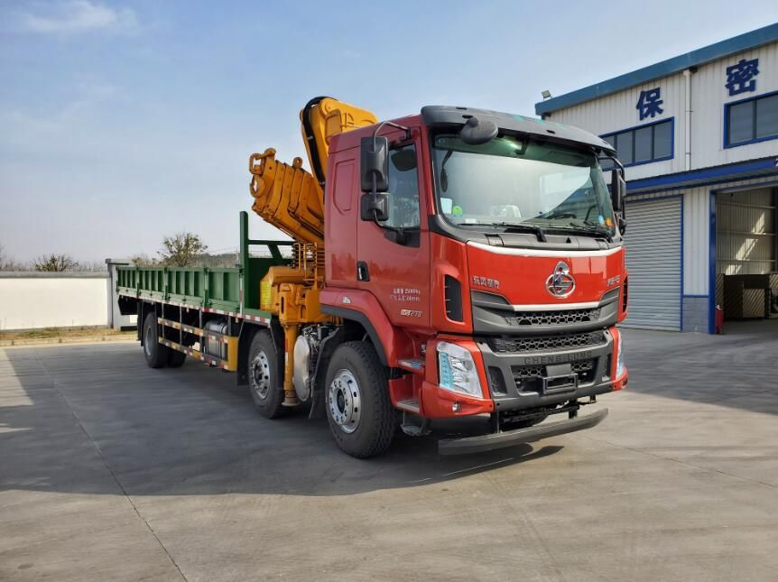

The numbers: China's truck crane exports keep compounding
According to reconciled UN Comtrade data (CEPII BACI, HS 8426.91 — cranes designed for mounting on road vehicles), China exported $98.2 million of vehicle-mounted cranes in 2024, about 19,100 tonnes. That's up 5% on 2023, and up from just $26.4 million in 2017 — roughly 21% average annual growth over eight years. China now ranks 7th of 85 exporting countries, selling to 131 buyer markets.
Where does it all go? The 2024 split looks like this:
- Russia — 34% of the value (about $33.8 million). Long-distance haulage and construction rebound keep demand steady.
- Indonesia — 10%. Island logistics and construction fleets, where a single truck doing both lifting and hauling cuts fleet size.
- Thailand — 6%. Municipal contracting and agricultural haulage.
- Turkey — the fastest riser, up 239% year-on-year. Importers there resell into Central Asia and the Middle East.
One more figure worth knowing: the average declared export price was about $5.14 per kg in 2024 — roughly half the world average of $10.67. That's the factory-direct cost advantage in one number, though it blends every grade shipped, so treat it as a reference point rather than a quote.

What those markets actually order — real announcement specs
Trade data tells you where; buyers ask us what. Every model below is a registered MIIT announcement model (LINGYANG brand), China VI diesel, built for export. The specs are public record — no guesswork, no brochure numbers.
Russia & Central Asia: the 25-tonne long-bed workhorse
LYP5250JSQ. GVW 25,000 kg, curb weight 16,800 kg, rated payload 8,070 kg, cargo bed up to 8,000 × 2,450 mm, three axles, top speed 90 km/h. Four wheelbase combinations (2,050 + 3,550 to 2,050 + 5,350 mm) and a choice of Yuchai engines — YCS06245-60A (180 kW), YCS06270-60 (199 kW) or YCS06290-61 (213 kW). Cold-climate markets order this class most: the long bed carries timber, pipe and machinery, and the engine family has deep parts coverage across the CIS.
Southeast Asia: the nimble 18-tonner
LYP5180JSQ. GVW 18,000 kg, curb weight 12,810 kg, rated payload 4,995 kg, bed 5,000 × 2,450 mm, two axles, wheelbase 4,200 or 4,500 mm, top speed 89 km/h on 10.00R20 18PR tyres. Indonesian and Thai municipal fleets like this class because it fits village roads and urban compounds where a three-axle truck simply can't turn.

Heavy contracting: the 31-tonne four-axle
LYP5310JSQ. GVW 31,000 kg, curb weight 22,000 kg, rated payload 8,870–8,805 kg, bed 7,500 or 6,800 × 2,450 mm, four axles, wheelbase 2,100 + 4,300 + 1,350 mm (or 2,100 + 3,800 + 1,350 mm), top speed 89 km/h, 11.00R20 tyres. Engine options include MC07.34-60, WP8.350E61 and MC07H.35-60 — for detailed power ratings, contact us for details. Mining-service and infrastructure contractors across Africa and the Middle East run this class.

Why "truck crane China" keeps winning orders
Three reasons our buyers repeat, market after market. First, price per tonne of lifting capacity — the $5.14/kg average above is not a fluke, it's the integrated supply chain. Second, homologation: an announcement model ships with clean, public specs, so customs clearance paperwork is straightforward. Third, adaptation: we match the configuration to your country's emission rules, climate and road conditions before quoting, not after delivery.
And the demand isn't slowing. At bauma CHINA 2026 in Shanghai this very week, Chinese special-purpose vehicle makers are publicly courting overseas buyers — which means competition for good stock is sharpest right now.
Get your market's configuration quoted
Tell us your country and your lifting job, and we'll confirm the compliant configuration, crane brand options and factory-direct price — usually within one working day.
Browse all 21 truck crane models WhatsApp us for a quote
Export figures: CEPII BACI / UN Comtrade (HS 8426.91), 2024 complete-year data, published November 2026. Vehicle specs: China MIIT announcement records for LINGYANG (凌扬牌) models. Final configuration and payload confirmed per order. — HESIN, overseas division of LINGYANG Vehicle Manufacturing.